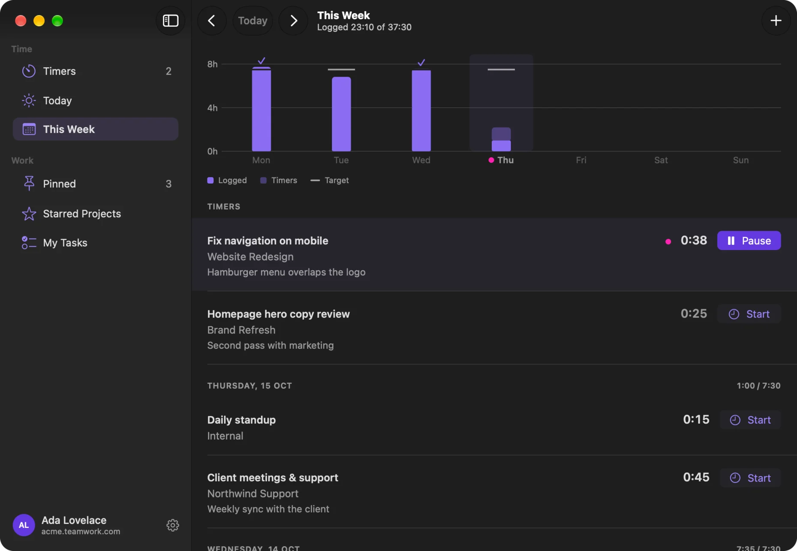
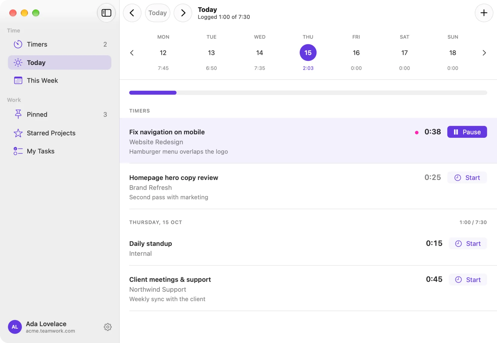
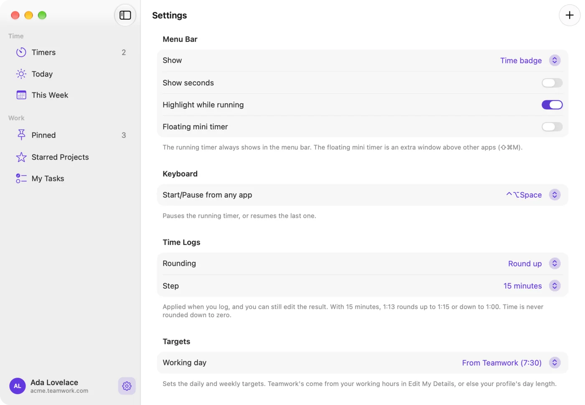

Stint is a small, native Mac app that keeps Teamwork.com time tracking in your menu bar. Start, pause and log time without opening a browser tab, while your timers stay in sync with Teamwork on the web.
An independent project, not made or endorsed by Teamwork.com.
Thu 15 Oct14:32
Try it.This popover is live, with sample data. Pause the timer or start another, and watch the menu bar.

Today: Thursday, 15 Oct.2:03 / 7:30
MON127:45
TUE136:50
WED147:35
THU152:03
FRI160:00
SAT170:00
SUN180:00
Timers
Fix navigation on mobileWebsite RedesignHamburger menu overlaps the logo
0:38
Homepage hero copy reviewBrand RefreshSecond pass with marketing
0:25
Logged1:00
Daily standupInternal
0:15
Client meetings & supportNorthwind SupportWeekly sync with the client
0:45
Log AllOpen Window
Time tracking that stays out of your way
Logging time is easiest when it takes a second. Stint puts Teamwork's own timers in the macOS menu bar, so starting the next task, pausing for lunch or logging the day is a click or a keystroke away.
Your whole day in the menu bar
Click the timer in the menu bar to see today at a glance.
Running and paused timers, each with Start, Pause, Edit and Log
The time you've logged today, against your working-day target
A week strip with each day's total. Press ← and → to move between days.
Log All sends every timer to Teamwork in one go
Logged 0:15 to Daily standup
Logged1:00
Daily standupInternal
0:15Start
Client meetings & supportNorthwind Support
0:45Start
Log AllOpen Window
A window for the bigger picture
Open the main window for Timers, Today, This Week, Pinned, Starred Projects and My Tasks. Edit a timer's task, notes or tracked time, and fix or delete logged entries, all in one place.
This Week charts the time you've logged each day against your target. Click a day to jump to its entries. Your target comes from your working hours in Teamwork, or set your own.

Make it yours
Choose how the timer looks in the menu bar: time, task and time, or just an icon, with a purple pill while a timer runs. Set a shortcut that starts and pauses from any app, round durations when you log, and pick when Stint should remind you.
Fix navigation 0:38Task and time
0:38Time
Icon only

Log with care
Type durations the way you think of them, round to a step you choose, mark the task complete and set billable time.
1:301 hour 30 minutes
1.5h1 hour 30 minutes
90m1 hour 30 minutes
:4545 minutes
5305 hours 30 minutes
Pinned tasks
Pin the work you repeat and start it from the popover with ⌘1 to ⌘9.
Daily standup Internal⌘1
Code review Website Redesign⌘2
Client meetings & support Northwind Support⌘3
Find any task
Starred projects, tasks due today and recent work come first. Search everything else, or paste a Teamwork task link.
Edit as you go
Move a running timer to another task, change its notes or tracked time, and edit logged entries later.
Idle detection
Back from a break? Keep the time you were away, or remove it and continue or stop.
Gentle reminders
A nudge when no timer is running, an alert for timers left on too long, and a reminder to log at the end of the day.
StintIn your Mac's menu bar
Your Teamwork siteacme.teamwork.com, its own timers
Teamwork on the webWhere your team and reports already are
There's no separate service in between: a timer you start on the web shows up in Stint, and one you start in Stint shows up on the web. Your time lands in Teamwork, where your team and your reports already are.
Your time goes to Teamwork. Nowhere else.
Your sign-in is stored in the macOS Keychain.
Stint talks only to your Teamwork site, and to teamwork.com when you use Sign in with Teamwork.
No analytics, no tracking, no ads and no servers of our own. We never see your data.
The source code is public on GitHub, so you can check all of this.